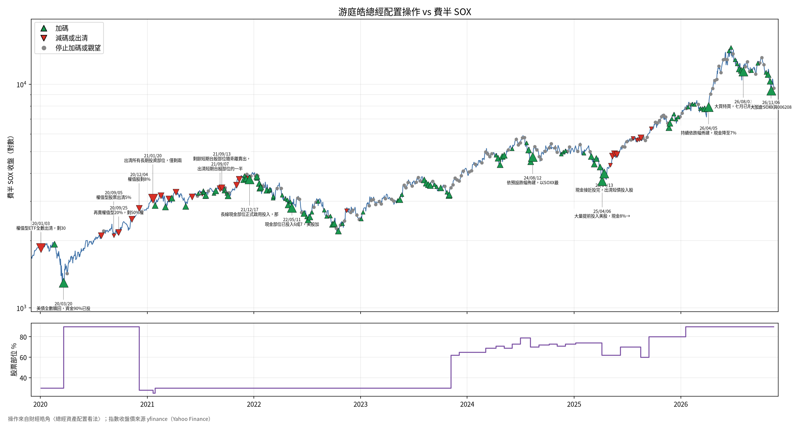
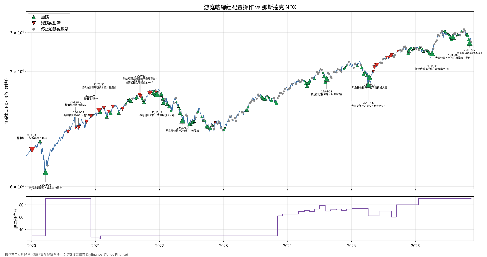
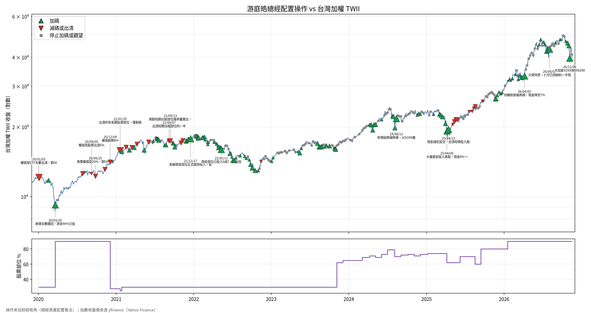
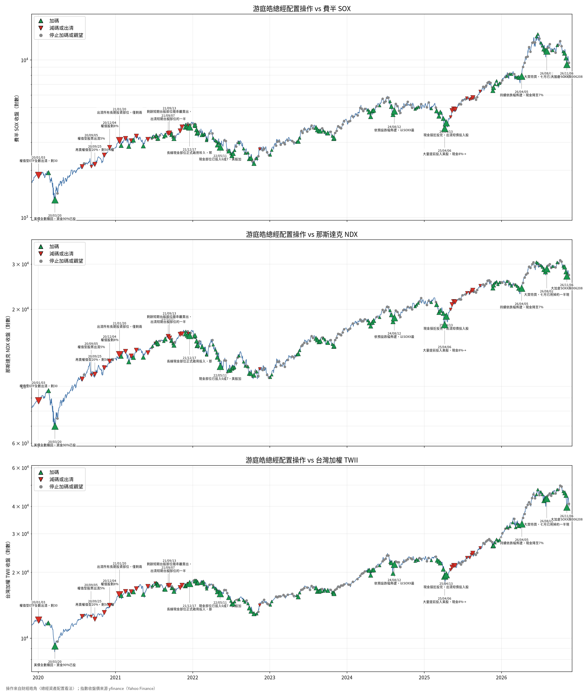

把游庭皓〈總經資產配置看法〉（2020-01-03～2026-11-15，共 300 篇）的操作點，對上 SOX、NDX、台灣加權（TWII）做訊號回測。僅供參考，非投資建議，也不是他的實際損益。
300 篇中：加碼 111、觀望 90、持平 42、停止加碼 30、減碼 25、出清 2。
滑過（手機請點）標記可看日期、動作、幅度與一句摘要。同一動作會畫在三張圖上，即使當週只做台股或只做美股。




單張圖下方的 stock_pct 為沿用舊值，不能當成真實倉位，見下方注意事項。
方法：進場價＝貼文日收盤，非交易日取下一個交易日收盤；1m=21、3m=63、6m=126、12m=252 個交易日。回撤＝進場價相對 2019-12-02 起最高收盤。
| 指數 | 期間 | n | 勝率 | 平均 | 中位數 |
|---|---|---|---|---|---|
| SOX | 1m | 107 | 64% | 3.7% | 1.7% |
| SOX | 3m | 105 | 61% | 8.5% | 5.3% |
| SOX | 6m | 98 | 70% | 18.0% | 14.9% |
| SOX | 12m | 85 | 58% | 20.7% | 18.4% |
| NDX | 1m | 107 | 62% | 2.2% | 1.5% |
| NDX | 3m | 105 | 61% | 3.7% | 3.7% |
| NDX | 6m | 98 | 68% | 7.8% | 12.1% |
| NDX | 12m | 85 | 66% | 11.3% | 16.0% |
| TWII | 1m | 107 | 64% | 2.1% | 1.4% |
| TWII | 3m | 105 | 61% | 5.0% | 3.6% |
| TWII | 6m | 98 | 73% | 11.1% | 7.1% |
| TWII | 12m | 85 | 62% | 12.7% | 10.4% |
以 12m 報酬排序，進場回撤為進場日相對起算以來高點。
| 指數 | 類型 | 日期 | 幅度 | 12m | 進場回撤 |
|---|---|---|---|---|---|
| SOX | 最佳 | 2020-03-20 | large | +137.0% | -34.4% |
| SOX | 最差 | 2021-11-27 | small | -31.7% | -0.0% |
| NDX | 最佳 | 2020-03-20 | large | +87.1% | -28.0% |
| NDX | 最差 | 2021-12-17 | large | -29.8% | -4.7% |
| TWII | 最佳 | 2025-04-13 | large | +103.0% | -20.0% |
| TWII | 最差 | 2021-09-30 | small | -22.6% | -6.1% |
2021 年底接近高點的加碼損失最大；最好的幾筆都出在大幅回撤之中。
「高於低點」指買點收盤比事後區間低點高多少，0% 代表買在最低點。S／M／L＝small／medium／large。區間低點是事後選的，含 lookahead。
低點：SOX 2020-03-18、NDX 2020-03-20、TWII 2020-03-19。2020-03-20 大量加碼（L）高於低點 SOX 0.9%、NDX 0.0%、TWII 6.4%，是整份回測最準的一筆。更早的 2020-02-17（M）高於低點 35.5%–49.9%。
低點：SOX 2022-10-14、TWII 2022-10-25、NDX 2022-12-28。2022 年 5–10 月沒有任何 large 加碼，都是小到中額分批：8 月底高於 SOX 低點約 27%，一路買到 10-17 的 M（高於 SOX 低點 2.3%、TWII 2.4%）。NDX 低點在 12 月底，2022-10-31 的買點仍高於低點 6.8%。這是分批下跌均攤，不是精準抄底。
低點：SOX 2023-10-30、NDX 2023-10-26、TWII 2023-10-31。2023-10-29（M）高於 SOX 低點 0.0%、2023-10-31（M）高於 TWII 低點 0.0%，非常貼近低點。
低點：SOX／NDX 2024-08-07、TWII 2024-08-05。2024-08-04（M）高於 NDX 低點 0.2%、TWII 低點 0.0%、SOX 低點 2.1%。其後 08-12 的 L 高於低點 3.8%–9.8%。7 月下旬的 S／M 則高於低點 7%–24%。
低點：SOX／NDX 2025-04-08、TWII 2025-04-09。2025-04-06 的 L 在低點前兩天，高於低點 2%–10.6%；04-13 的 L 高於低點 10%–12.4%。2–3 月較早的 M 高於低點 13%–34%。large 確實集中在低點附近，但前面已動用部分資金。
低點：SOX／NDX 2026-03-30、TWII 2026-01-02。低點前後多為 S／M，L 出現在 2026-04-05，高於 SOX 低點 10.8%、NDX 5.4%。2026-11 又有 large 加碼，尚無後續報酬可驗證。